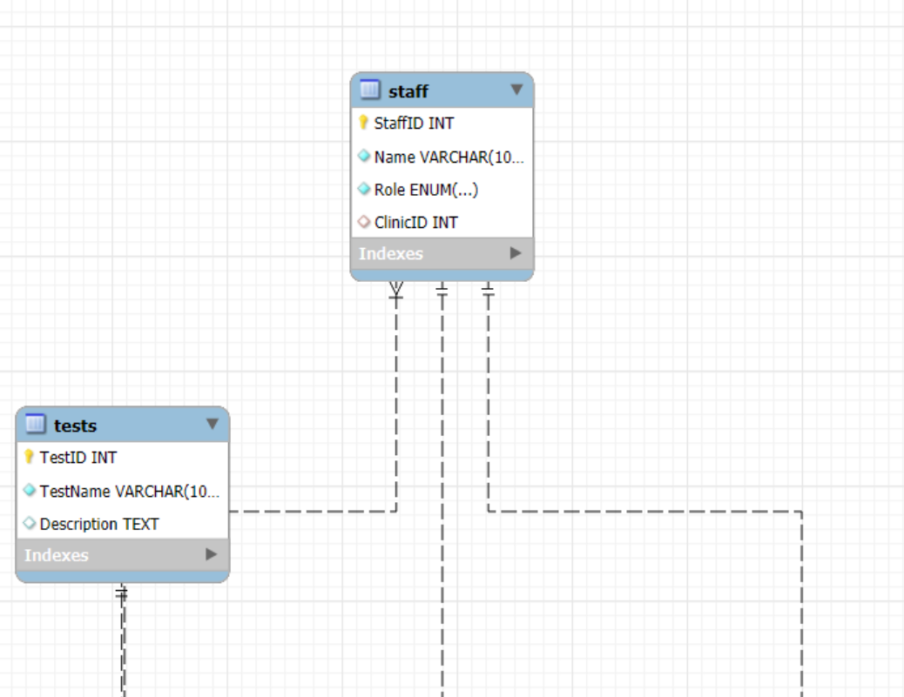

Diagnostic Laboratory Database.
Translating a diagnostic laboratory appointment scenario into a relational database model.
Project overview
For my Database Systems coursework, I worked from a lecturer-provided problem statement about a diagnostic laboratory appointment system. The scenario described how clinics book tests for patients, how staff and technicians handle appointments, and how results, reports and payments are recorded.
My contribution
With guidance from my lecturer, I developed an Entity Relationship Diagram (ERD) in MySQL Workbench. I identified the relevant tables and attributes, defined primary and foreign keys, and modelled relationships between patients, doctors, clinics, appointments, laboratory tests, staff, insurance providers, payments and reports.
How I approached the design
I translated the written business requirements into related entities, considered how appointment records connect to patients and referring doctors, and represented how multiple tests and their results can be associated with appointments.
What I learned
This coursework strengthened my understanding of relational database structure, table relationships and how database design supports real business processes.
ERD details.
Actual screenshots from my MySQL Workbench coursework model.

